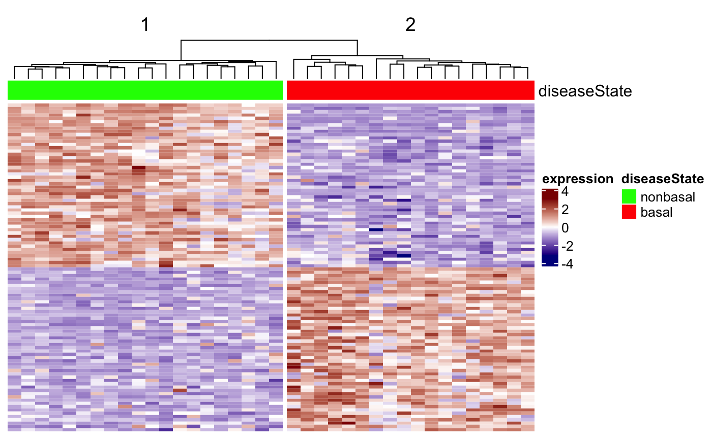
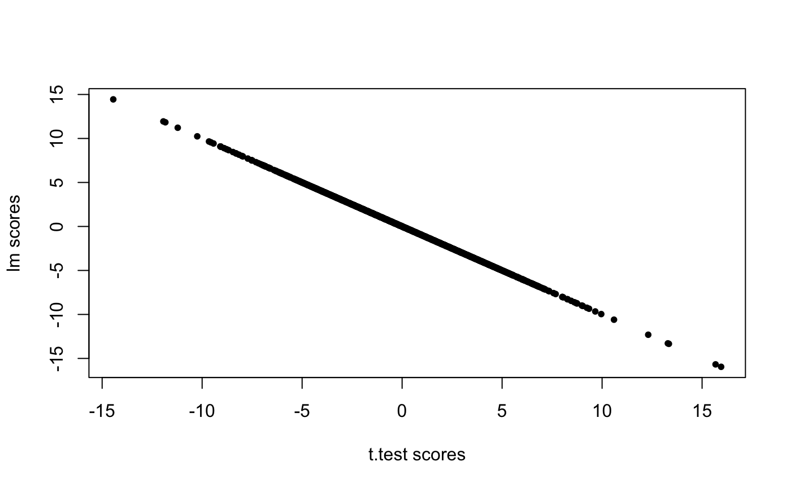
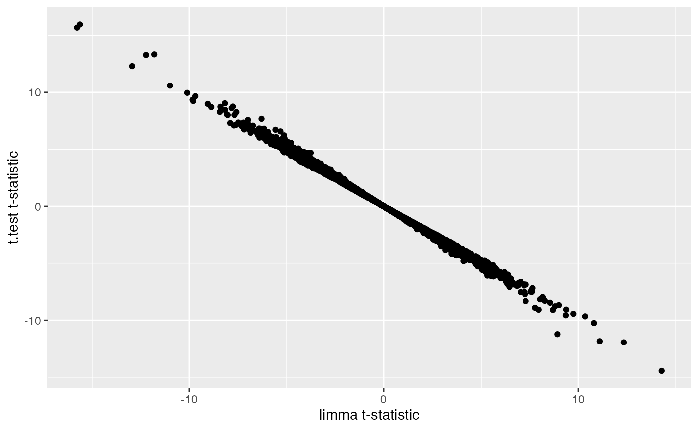
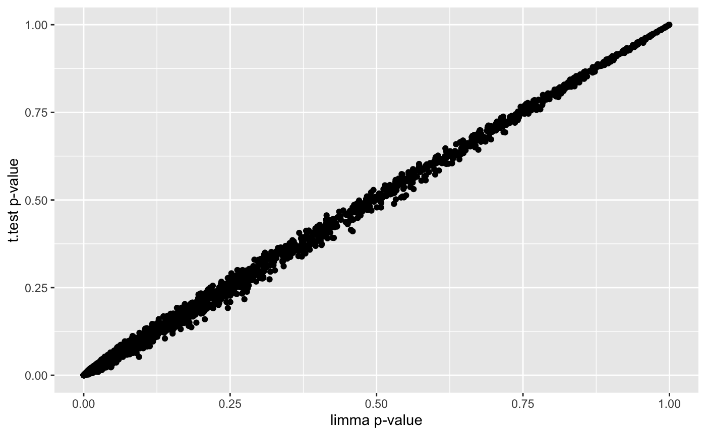
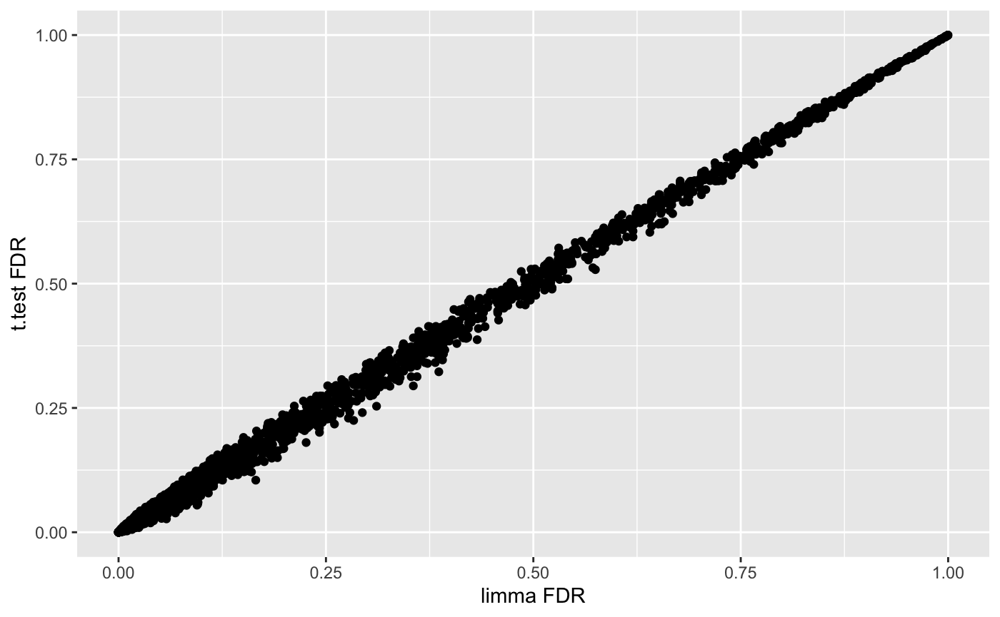
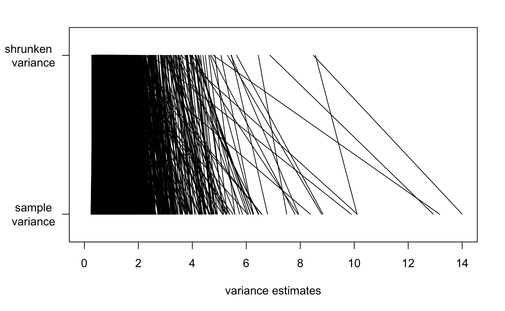

Gene Expression Differential Analysis with Microarrays
Amy Li, Eric Reed, Stefano Monti
Source:vignettes/docs/Diffanalysis.Rmd
Diffanalysis.Rmd
knitr::opts_chunk$set(message=FALSE, warning=FALSE)
library(BS831)
library(Biobase)
library(limma)
library(VennDiagram)
library(ComplexHeatmap)
library(circlize)
library(ggplot2)
library(vennr) # see github.com/montilab/vennrIn this module, we explore the use of different R functions to
perform differential analysis. In particular, we show few examples of
gene expression (GE) differential analysis based on the use of the
functions t.test and lm, as well as the
package limma, which implements a “moderated” t-test with
pooled variance (see documentation).
We also recall how to perform differential analysis by fitting a linear model, and the relationship of this approach to the use of the t-test.


Differential expression analysis using t.test
We start by uploading a Breast Cancer dataset already restricted to only two tumor categories, basal and nonbasal, described in [Richardson et al., PNAS 2006].
## load the ExpressionSet object
data(renamedBreastDB)
cancerSet <- renamedBreastDB
head(pData(cancerSet))## individual diseaseState
## GSM85500 T44 nonbasal
## GSM85504 T175 nonbasal
## GSM85493 T37 nonbasal
## GSM85496 T161 nonbasal
## GSM85510 T162 nonbasal
## GSM85509 T74 nonbasal
table(cancerSet$diseaseState)##
## nonbasal basal
## 20 18We have extracted the data of interest into the object
cancerSet. We are now ready to use the t.test
function. We first show its use applied to a single gene.
## split the data into the two diseaseState groups
group1 <- exprs(cancerSet)[, cancerSet$diseaseState=="nonbasal"]
group2 <- exprs(cancerSet)[, cancerSet$diseaseState=="basal"]
dim(group1) # show the size of group1## [1] 3000 20
dim(group2) # show the size of group2## [1] 3000 18
table(cancerSet$diseaseState) # show the size concordance with the phenotype annotation##
## nonbasal basal
## 20 18
## for ease of use let's define the variable pheno (although this can be error prone)
pheno <- as.factor(cancerSet$diseaseState)
## use gene symbols to index the rows (rather than the entrez IDs)
rownames(group1) <- fData(cancerSet)$hgnc_symbol
rownames(group2) <- fData(cancerSet)$hgnc_symbol
## show few entries of group1 (the fist 5 genes in the first 5 samples)
group1[1:5,1:3]## GSM85500 GSM85504 GSM85493
## AGR3 10.936912 10.909106 3.457178
## SCGB2A2 4.657357 12.905984 12.492609
## AGR2 9.982120 10.498317 10.957156
## CALML5 9.823054 4.100886 10.846989
## KRT23 5.343814 5.062843 8.284119
## let us show the use of t.test on a single gene (the 1st)
T1 <- t.test(x=group1[1,],y=group2[1,],alternative="two.sided")
T1##
## Welch Two Sample t-test
##
## data: group1[1, ] and group2[1, ]
## t = 7.3818, df = 25.488, p-value = 8.74e-08
## alternative hypothesis: true difference in means is not equal to 0
## 95 percent confidence interval:
## 3.949715 7.002422
## sample estimates:
## mean of x mean of y
## 9.241425 3.765357
## the default is to perform t-test w/ unequal variance. Let's try w/ equal variance
T2 <- t.test(x=group1[1,],y=group2[1,],alternative="two.sided",var.equal=TRUE)
T2##
## Two Sample t-test
##
## data: group1[1, ] and group2[1, ]
## t = 7.0989, df = 36, p-value = 2.436e-08
## alternative hypothesis: true difference in means is not equal to 0
## 95 percent confidence interval:
## 3.911596 7.040541
## sample estimates:
## mean of x mean of y
## 9.241425 3.765357We then show how to apply it to all the genes in the dataset.
## apply the t.test to each gene and save the output in a data.frame
## note: this is equivalent to (i.e., no more efficient than) a for loop
ttestRes <- data.frame(t(sapply(1:nrow(group1),
function(i){
res <- t.test(x = group1[i, ], y = group2[i,], alternative ="two.sided")
res.list <- c(t.score=res$statistic,t.pvalue = res$p.value)
return(res.list)
})))
## use the gene names to index the rows (for interpretability)
rownames(ttestRes) <- rownames(group1)In the application above, we made use of the
t.test(x,y,...) version of the command. However, the use of
the t.test(formula,...) version of the command turns out to
be simpler and more elegant, as it does not require to split the dataset
into two groups.
## application to a single gene but using the formula
T3 <- t.test(exprs(cancerSet)[1,] ~ pheno)
print(T3) # same results as before##
## Welch Two Sample t-test
##
## data: exprs(cancerSet)[1, ] by pheno
## t = 7.3818, df = 25.488, p-value = 8.74e-08
## alternative hypothesis: true difference in means between group nonbasal and group basal is not equal to 0
## 95 percent confidence interval:
## 3.949715 7.002422
## sample estimates:
## mean in group nonbasal mean in group basal
## 9.241425 3.765357
T3$statistic==T1$statistic## t
## TRUE
## application to all genes (coerce output into data.frame for easier handling)
ttestRes1 <- as.data.frame(
t(apply(exprs(cancerSet),1,
function(y) {
out <- t.test(y~pheno,var.equal=TRUE)
c(t.score=out$statistic,t.pvalue=out$p.value)
})))
## use the gene names to index the rows (for interpretability)
rownames(ttestRes1) <- fData(cancerSet)$hgnc_symbol
## let us add to the output data.frame an extra column reporting the FDR
## .. (i.e., the MHT-corrected p-value)
ttestRes1$t.fdr <- p.adjust(ttestRes1$t.pvalue, method = "BH")
## show few entries
head(ttestRes1)## t.score.t t.pvalue t.fdr
## AGR3 7.098865 2.436385e-08 1.260199e-06
## SCGB2A2 3.887477 4.181175e-04 2.208367e-03
## AGR2 12.306654 1.843972e-14 9.219859e-12
## CALML5 -3.112889 3.620331e-03 1.231405e-02
## KRT23 -4.936970 1.821254e-05 2.046353e-04
## FOXA1 15.952246 6.689783e-18 1.747328e-14Efficient Computation
Here’s an aside on efficient computation (see the module Efficient
Computation in R). Above, we used the function t.test
together with apply to compute the t statistics and
p-values, which requires calling the t.test function 3000
times. Below, we show the use of the function mt.teststat
in the package multtest,
to compute the t-statistics for a large number of genes more
efficiently.
## computation based on t.test
t_slow <- system.time(
res_slow <- unname(apply(
exprs(cancerSet), 1,
function(y) { t.test(y ~ pheno, var.equal = FALSE)$statistic }
))
)
## computation based on multtest function
t_fast <- system.time(
res_fast <-
multtest::mt.teststat(X = exprs(cancerSet), classlabel = pheno, test = "t")
)
## check if the two yield the same results (modulo the sign)
all.equal(res_slow, -res_fast)## [1] TRUENotice the considerable speed-up achieved.
## show execution times
rbind('t.test' = t_slow, multtest = t_fast)## user.self sys.self elapsed user.child sys.child
## t.test 2.212 0.023 2.268 0 0
## multtest 0.072 0.009 0.094 0 0This might come particularly handy if, e.g., one wanted to compute permutation-based p-values rather than asymptotic p-values.
Heatmap visualization
We now show how to visualize the top markers for each class by means
of the Heatmap function defined in the
ComplexHeatmap package.
## let us sort the output by t-score
ttestOrd <- order(ttestRes1[,'t.score.t'],decreasing=TRUE)
## let us visualize the top 50 and bottom 50 genes
hiIdx <- ttestOrd[1:50]
loIdx <- ttestOrd[nrow(ttestRes1):(nrow(ttestRes1)-49)]
datOut <- exprs(cancerSet)[c(hiIdx,loIdx),]
datScaled <- t(scale(t(datOut))) # row scale the matrix for better visualization
ha.t <- HeatmapAnnotation(diseaseState=cancerSet$diseaseState,
col=list(diseaseState=c(nonbasal="green",basal="red")))
Heatmap(datScaled,
name="expression",
col=circlize::colorRamp2(c(-3, 0, 3), c("darkblue", "white", "darkred")),
top_annotation=ha.t,
cluster_rows=FALSE,
cluster_columns=TRUE,
column_split=2,
row_title="",
show_column_names=FALSE,
show_row_names=FALSE)
Differential expression analysis using lm
We now show the use of the function lm (for linear
model) to perform the same analysis. As discussed in class, we can
regress the expression of a gene on the phenotype variable (in this
case, a binary variable). Below, we apply it to a single gene first, and
show that the test result is the same as for the t.test
with equal variance. We then apply it to all the genes in the
dataset.
##
## Call:
## lm(formula = exprs(cancerSet)[1, ] ~ pheno)
##
## Residuals:
## Min 1Q Median 3Q Max
## -6.1183 -0.5044 -0.2457 1.6885 4.7350
##
## Coefficients:
## Estimate Std. Error t value Pr(>|t|)
## (Intercept) 9.2414 0.5309 17.407 < 2e-16 ***
## phenobasal -5.4761 0.7714 -7.099 2.44e-08 ***
## ---
## Signif. codes: 0 '***' 0.001 '**' 0.01 '*' 0.05 '.' 0.1 ' ' 1
##
## Residual standard error: 2.374 on 36 degrees of freedom
## Multiple R-squared: 0.5833, Adjusted R-squared: 0.5717
## F-statistic: 50.39 on 1 and 36 DF, p-value: 2.436e-08## [1] TRUE
## application to all genes
ttestRes2 <- as.data.frame(t(apply(exprs(cancerSet),1,
function(y) {
out <- summary(lm(y~pheno))$coefficients
c(t.score=out[2,"t value"],t.pvalue=out[2,"Pr(>|t|)"])
})))
## use the gene names to index the rows (for interpretability)
rownames(ttestRes2) <- fData(cancerSet)$hgnc_symbol
## let us add to the output data.frame an extra column reportding the FDR
## .. (i.e., the MHT-corrected p-value)
ttestRes2$t.fdr <- p.adjust(ttestRes2$t.pvalue, method = "BH")
## the scores are the same (modulo the sign, which is arbitrary)
plot(ttestRes1$t.score.t,ttestRes2$t.score,pch=20,xlab="t.test scores",ylab="lm scores")
all.equal(-ttestRes1$t.score.t,ttestRes2$t.score)## [1] TRUEDifferential expression analysis using the limma
package
With this package, we are performing differential analysis taking the “linear regression” approach (i.e., by regressing each gene’s expression on the phenotype variable (and possibly, on other covariates). The main difference is in the estimation of the variance, which is here ‘pooled’ across multiple genes with similar expression profiles. This pooling is particularly useful with small sample size datasets, where the variance estimates of individual genes can be extremely noisy, and pooling multiple genes allows for “borrowing” of information.
Fitting a limma model includes the following steps:
Definition of the “design matrix”
Definition of the “contrast.”
Fitting of the linear model.
Fitting of the contrast.
Bayesian “moderation” of the genes’ standard errors towards a common value.
Extract the relevant differential analysis information (fold-change, p-value, etc.)
Depending on the design matrix definition, steps 2 and 4 might or might not be needed. In particular, if the result of interest is captured by a single model parameter, than the definition and fitting of the contrast can be skipped.
To be more specific, a standard linear model for the differential analysis with respect to a gene can be specified in one of two ways.
- \[Y_{gene} = \beta_0 + \beta_1 X_{pheno}\]
where \(X\) takes the values \(0\) and \(1\), depending on whether the sample belongs to class 0 or 1. Or,
- \[Y_{gene} = \beta_0X_{0}+ \beta_1X_1\]
where \(X_0,X_1 = 1,0\) for samples in class 0, and \(X_0,X_1=0,1\) for samples in class 1.
It should be noted that in Equation (1), the parameter \(\beta_1\) captures the relevant differential expression, while in Equation (2), the difference \(\beta_0-\beta_1\) captures the differential value of interest. Thus, in the first model specification we do not need to define a contrast, while in the second we do.
In the following code chunk, we use the model of Equation (1), hence we don’t need to fit a contrast and we need to extract the parameter \(\beta_1\) (basal) instead.
## 1. Definition of the "design matrix"
design1 <- model.matrix(~factor(pheno))
colnames(design1)## [1] "(Intercept)" "factor(pheno)basal"
## simplify names
colnames(design1) <- c("intercept", "basal")
print(unique(design1)) # show the 'coding' for the two classes## intercept basal
## 1 1 0
## 21 1 1
## 3. Fitting the model
fit1 <- lmFit(cancerSet, design1)
## 5. Bayesian "moderation"
fit1 <- eBayes(fit1)
head(fit1$coefficients)## intercept basal
## AGR3 9.241425 -5.476069
## SCGB2A2 9.049974 -4.020716
## AGR2 10.349870 -5.139503
## CALML5 6.314069 2.564793
## KRT23 6.348392 3.193484
## FOXA1 7.215394 -3.997576
## 6. extract the relevant differential analysis information, sorted by p-value
limmaRes1 <- topTable(fit1, coef="basal",adjust.method = "BH", n = Inf, sort.by = "P")In the following code chunk, we use the model of Equation (2), hence we need to define and fit the contrast.
## 1. Definition of the "design matrix"
design2 <- model.matrix(~0 + factor(pheno))
colnames(design2)## [1] "factor(pheno)nonbasal" "factor(pheno)basal"
## simplify names
colnames(design2) <- c("nonbasal", "basal")
print(unique(design2)) # show the 'coding' for the two classes## nonbasal basal
## 1 1 0
## 21 0 1
## 2. Definition of the "contrast"
contrast.matrix <- makeContrasts(basal-nonbasal, levels = design2)
## 3. Fitting the model
fit2 <- lmFit(cancerSet, design2)
## 4. Fitting the contrast
fit2 <- contrasts.fit(fit2,contrast.matrix)
## 5. Bayesian "moderation"
fit2 <- eBayes(fit2)
head(fit2$coefficients)## Contrasts
## basal - nonbasal
## AGR3 -5.476069
## SCGB2A2 -4.020716
## AGR2 -5.139503
## CALML5 2.564793
## KRT23 3.193484
## FOXA1 -3.997576
## 6. extract the relevant differential analysis information, sorted by p-value
limmaRes2 <- topTable(fit2, adjust.method = "BH", n = Inf, sort.by = "P")As you can see below, the two model specifications yield the same results.
all.equal(limmaRes1$t,limmaRes2$t)## [1] TRUE
all.equal(limmaRes1$P.Value,limmaRes2$P.Value)## [1] TRUEComparing t-test and limma results
## comparing t-test results to limma results
combinedRes <- data.frame(limmaRes1, ttestRes1[match(limmaRes1$hgnc_symbol, rownames(ttestRes1)),],
check.names=FALSE)
ggplot(combinedRes, aes(x=t,y=t.score.t)) +
geom_point() +
labs(x="limma t-statistic",y="t.test t-statistic")
ggplot(combinedRes, aes(x=P.Value,y=t.pvalue)) +
geom_point() +
labs(x="limma p-value",y="t.test p-value")
ggplot(combinedRes, aes(x=adj.P.Val,y=t.fdr)) +
geom_point() +
labs(x="limma FDR",y="t.test FDR")
As noted above, limma performs shrinkage of the variance
estimates, by borrowing information across similar genes. Here, we show
the effect of that shrinkage.
## limma performs eBayes shrinkage of variance estimates, resulting in moderated t-statistics
empS <- apply(exprs(cancerSet), 1, var)
par(mar=c(5,5,2,2))
n <- length(empS)
plot(1,1,xlim=c(0,14),ylim=c(0,1),type="n",
xlab="variance estimates",ylab="",yaxt="n")
axis(2,at=c(0.9,0.1),c("shrunken \n variance","sample \n variance"),las=2)
segments(fit2$s2.post, rep(.9, n),empS,rep(.1,n))
Finally, we compare the two analyses based on the number of genes found to be significant by the two methods, and we look at the overlap.
print(data.frame("p=0.05"=c(limma=sum(combinedRes$adj.P.Val<=0.05),ttest=sum(combinedRes$t.fdr<=0.05)),
"p=0.01"=c(limma=sum(combinedRes$adj.P.Val<=0.01),ttest=sum(combinedRes$t.fdr<=0.01)),
check.names=FALSE))## p=0.05 p=0.01
## limma 1231 836
## ttest 1212 843
## what is the overlap between t-ttest and limma derived significant genes?
qThresh <- 0.01
top.ttest <- rownames(combinedRes)[combinedRes$t.fdr<=qThresh]
top.limma <- rownames(combinedRes)[combinedRes$adj.P.Val<=qThresh]
topGenes <- list(top.ttest = top.ttest, top.limma = top.limma)
vennr(topGenes)Modelling with covariates
We here show how to perform differential analysis while controlling
for the confounding effects of covariates. To this end, we use a
different breast cancer dataset, which reports several phenotypic
annotations for each patient [Loi et al., PNAS
2010]. In this analysis, we will look for markers of lymph node (LN)
status, LN_status, while controlling for age.
data(breast_loi_133p2)
## load the ExpressionSet object
BC <- breast_loi_133p2
pData(BC)[1:5,1:6] # show some data annotation## ER_status PR_status LN_status tumor_grade tumor_size age
## GSM151259 1 1 0 NA 3.0 46
## GSM151260 1 1 1 NA 2.0 71
## GSM151261 1 NA 1 NA 1.3 58
## GSM151262 1 1 1 2 2.0 57
## GSM151263 1 1 1 NA 1.5 69
## select top 5000 genes by MAD
MAD <- apply(exprs(BC),1,mad)
BC5K <- BC[order(MAD,decreasing=TRUE)[1:5000],]
dim(BC5K)## Features Samples
## 5000 87
## to reuse the same code below, just assign the new dataset to BC
BC <- BC5K
# Reformat LN variable and subset
BC$LN_status <- c("negative","positive")[BC$LN_status+1]
pData(BC) <- pData(BC)[, c("LN_status", "age")]Model without age covariate
#Next, we'll add age as a covariate
design <- model.matrix(~ 0 + factor(LN_status), data = pData(BC))
colnames(design)## [1] "factor(LN_status)negative" "factor(LN_status)positive"## negative positive
## GSM151259 1 0
## GSM151260 0 1
## GSM151261 0 1
## GSM151262 0 1
## GSM151263 0 1
## GSM151264 1 0
contrast.matrix <- makeContrasts(positive-negative, levels = design)
fit <- lmFit(BC, design)
fit <- contrasts.fit(fit,contrast.matrix)
fit <- eBayes(fit)
head(fit$coefficients)## Contrasts
## positive - negative
## 214451_at -0.07440136
## 213831_at 0.63871828
## 206799_at 0.59131937
## 214079_at 1.51281690
## 237395_at 0.29170378
## 205509_at 0.50212408
## get full differential expression output table, sorted by p-value
limmaRes <- topTable(fit, adjust.method="BH", n=Inf, sort.by="P")
head(limmaRes)## logFC AveExpr t P.Value adj.P.Val B
## 204774_at 1.059990 6.183928 4.440868 2.449560e-05 0.02397453 2.416487
## 227265_at 1.109496 7.378402 4.434772 2.507497e-05 0.02397453 2.395877
## 211742_s_at 1.055184 6.336092 4.417330 2.680668e-05 0.02397453 2.337008
## 210982_s_at 1.033191 9.763920 4.400980 2.853454e-05 0.02397453 2.281956
## 208894_at 1.054594 10.033072 4.362180 3.307625e-05 0.02397453 2.151824
## 220330_s_at 1.221396 5.990390 4.273432 4.623742e-05 0.02397453 1.856932Model with age covariate
#Next, we'll add age as a covariate
designBC <- model.matrix(~ 0 + factor(LN_status) + age, data = pData(BC))
colnames(designBC)## [1] "factor(LN_status)negative" "factor(LN_status)positive"
## [3] "age"## negative positive age
## GSM151259 1 0 46
## GSM151260 0 1 71
## GSM151261 0 1 58
## GSM151262 0 1 57
## GSM151263 0 1 69
## GSM151264 1 0 67
contrast.matrixBC <- makeContrasts(positive-negative, levels = designBC)
fitBC <- lmFit(BC, designBC)
# Difference in expression between LN_status = positive and LN_status = negative individuals
fitC <- contrasts.fit(fitBC,contrast.matrixBC)
fitC <- eBayes(fitC)
head(fitC$coefficients)## Contrasts
## positive - negative
## 214451_at -0.1650234
## 213831_at 0.4924909
## 206799_at 0.8529203
## 214079_at 1.5656145
## 237395_at 0.4286837
## 205509_at 0.6642966
#get full differential expression output table, sorted by p-value
limmaResC <- topTable(fitC, adjust.method = "BH", n = Inf, sort.by = "P")
head(limmaResC)## logFC AveExpr t P.Value adj.P.Val B
## 204774_at 0.9181435 6.183928 4.041504 0.0001096767 0.09069443 1.0257785
## 227265_at 0.9490739 7.378402 4.034020 0.0001126886 0.09069443 1.0029208
## 211742_s_at 0.9344744 6.336092 4.029188 0.0001146754 0.09069443 0.9881758
## 210982_s_at 0.8854415 9.763920 3.998785 0.0001279671 0.09069443 0.8956791
## 208894_at 0.9001117 10.033072 3.957255 0.0001485258 0.09069443 0.7700903
## 220330_s_at 1.0548837 5.990390 3.864792 0.0002062350 0.09069443 0.4936840## negative positive age
## 214451_at 7.545331 7.380308 -0.02952852
## 213831_at 8.440442 8.932933 -0.04764712
## 206799_at 2.281801 3.134722 0.08524075
## 214079_at 3.873064 5.438679 0.01720372
## 237395_at 4.147812 4.576496 0.04463389
## 205509_at 2.985486 3.649783 0.05284273
#get full differential expression output table, sorted by p-value
limmaResA <- topTable(fitA, adjust.method = "BH", n = Inf, sort.by = "P", coef = "age")
head(limmaResA)## logFC AveExpr t P.Value adj.P.Val B
## 222368_at 0.04159101 5.820957 4.729416 8.042288e-06 0.01172553 3.254672
## 209616_s_at -0.05276552 4.771513 -4.639010 1.148686e-05 0.01172553 2.914932
## 215248_at 0.05967738 4.300457 4.625155 1.212784e-05 0.01172553 2.863223
## 204438_at -0.07825071 5.466745 -4.597767 1.349852e-05 0.01172553 2.761286
## 217989_at -0.04982929 6.681026 -4.546247 1.649493e-05 0.01172553 2.570552
## 226773_at -0.05789788 6.262090 -4.544664 1.659652e-05 0.01172553 2.564713Model with age:LN_status interaction
## Next, we'll model the interaction between age and LN_status
designI <- model.matrix(~ 0 + factor(LN_status) + age + factor(LN_status):age, data = pData(BC))
colnames(designI)## [1] "factor(LN_status)negative" "factor(LN_status)positive"
## [3] "age" "factor(LN_status)positive:age"## negative positive age positiveIage
## GSM151259 1 0 46 0
## GSM151260 0 1 71 71
## GSM151261 0 1 58 58
## GSM151262 0 1 57 57
## GSM151263 0 1 69 69
## GSM151264 1 0 67 0
contrast.matrixI<- makeContrasts(positive-negative, levels = designI)
fitI <- lmFit(BC, designI)
## Difference in expression between LN_status = positive and LN_status = negative individuals
fitIC <- contrasts.fit(fitI,contrast.matrixI)
fitIC <- eBayes(fitIC)
head(fitIC$coefficients)## Contrasts
## positive - negative
## 214451_at -10.249968
## 213831_at 11.454091
## 206799_at -1.772522
## 214079_at 5.479374
## 237395_at -4.787502
## 205509_at -4.144594
## get full differential expression output table, sorted by p-value
limmaResIC <- topTable(fitIC, adjust.method = "BH", n = Inf, sort.by = "P")
head(limmaResIC)## logFC AveExpr t P.Value adj.P.Val B
## 212998_x_at 6.029563 7.718271 3.369477 0.001103701 0.9989043 -4.576441
## 211654_x_at 6.009405 7.567082 3.361841 0.001131194 0.9989043 -4.576524
## 206224_at 9.399659 4.748404 3.209628 0.001833129 0.9989043 -4.578166
## 202967_at 4.856664 7.560839 3.178711 0.002018319 0.9989043 -4.578494
## 213537_at 5.582078 6.356197 3.014667 0.003328364 0.9989043 -4.580201
## 243722_at -5.900060 3.383797 -3.011860 0.003356448 0.9989043 -4.580229## negative positive age positiveIage
## 214451_at 12.746039 2.496071 -0.109709564 0.15922281
## 213831_at 2.787651 14.241741 0.039503831 -0.17306359
## 206799_at 3.635717 1.863194 0.064366983 0.04145093
## 214079_at 1.854776 7.334150 0.048320336 -0.06179110
## 237395_at 6.837748 2.050247 0.003162255 0.08235402
## 205509_at 5.465385 1.320791 0.014609307 0.07592359
#get full differential expression output table, sorted by p-value
limmaResIA <- topTable(fitIA, adjust.method = "BH", n = Inf, sort.by = "P", coef = "age")
head(limmaResIA)## logFC AveExpr t P.Value adj.P.Val B
## 201641_at -0.08458172 9.030278 -4.338494 3.687235e-05 0.1843618 2.0143868
## 226773_at -0.07300936 6.262090 -4.045728 1.087819e-04 0.2059585 1.0098130
## 209616_s_at -0.06472322 4.771513 -4.010398 1.235751e-04 0.2059585 0.8918007
## 209310_s_at -0.04928263 6.036865 -3.789977 2.695591e-04 0.2458887 0.1719774
## 235144_at 0.05613521 7.804459 3.678568 3.956416e-04 0.2458887 -0.1807211
## 202575_at 0.06306109 10.190224 3.671704 4.050104e-04 0.2458887 -0.2021987
## Difference in effect of Age between LN_status = positive and LN_status = negative participants
limmaResIP <- topTable(fitIA, adjust.method = "BH", n = Inf, sort.by = "P", coef = "positiveIage")
head(limmaResIP)## logFC AveExpr t P.Value adj.P.Val B
## 235658_at -0.07787538 4.284202 -3.158491 0.002148725 0.9993496 -1.529306
## 211654_x_at -0.08651799 7.567082 -3.096804 0.002596684 0.9993496 -1.694549
## 212998_x_at -0.08539702 7.718271 -3.053381 0.002962493 0.9993496 -1.809305
## 206224_at -0.13950485 4.748404 -3.047849 0.003012385 0.9993496 -1.823832
## 223218_s_at 0.09406791 7.791139 2.836833 0.005609469 0.9993496 -2.361882
## 220108_at 0.08030901 3.961877 2.828727 0.005741587 0.9993496 -2.381917